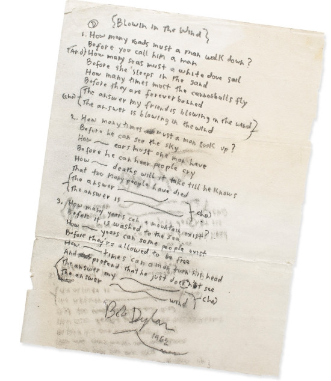

Preeminent 20th century singer-songwriter Bob Dylan came to prominence in the civil rights era of the USA, when he created anthems
such as "Blowin' in the Wind" and "The Times They Are a-Changin'," which then went on to become some of his bestselling songs.
He was also heavily inspired by black artists from the blues and folk genres, such as Little Richard and Ma Rainey.

Blowin' in the Wind Original Penned Lyrics
Here is the original lyric sheet for Bob Dylan's civil rights anthem "Blowin' in the Wind," which was rumored to have been
penned within 10 minutes while Dylan was ruminating on the injustices of the time. Listen to the song while reading the lyrics, below.
Sam Cooke's InspirationSam Cooke's Inspiration from Bob Dylan
Sam Cooke, a prominent soul singer of the time, was greatly inspired by "Blowin' in the Wind," and made a song in response to that.
Listen to it below.